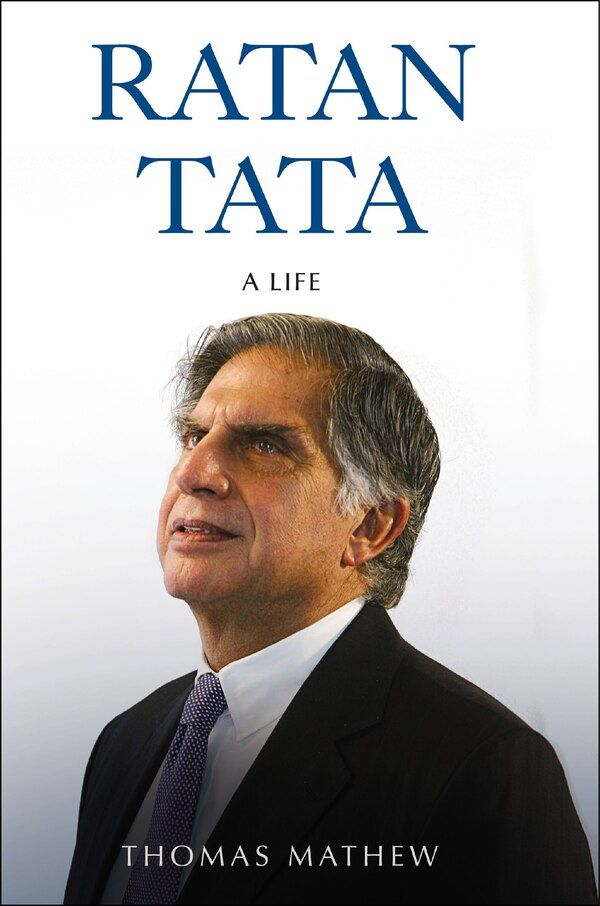

Summary:
To create an Indian environment with fresh air to breathe, clean water to drink, nutritious food with no one left hungry, and a way to care for everyone’s health should be the priority for you and me.—Ratan Tata
Ratan Tata (1937–2024) was one of the most influential and inspirational personalities of our times—an iconic business leader who was instrumental in transforming independent India’s industrial landscape.
Established in 1868, the Tata Group spans a gamut of industries, from salt to steel to software, and is synonymous with quality and trust. It operates in more than 100 countries, impacting the lives of billions of people around the world. The abiding goodwill and respect that the Tata brand carries today can be traced back largely to the vision and integrity of one individual who spearheaded the conglomerate for over two decades—Ratan Tata.
Starting out as a novice on the shop floor of a Tata company, Ratan Tata achieved an unequalled growth rate for the Tata Group as chairman and took India to the world through global acquisitions, overcoming many serious challenges along the way.
This fascinating biography traces Ratan Tata’s years in immaculate detail, from his lonely childhood to his irrepressible youthful exuberance, from his first major job in the conglomerate to being appointed chairman of Tata Sons in 1991 to his role as the head of Tata Trusts, India’s largest philanthropic enterprise. It is as much a story of determination and an unwavering commitment to enduring principles and values as it is a testament to achieving unprecedented corporate success.
Drawing on hundreds of hours of interviews with Ratan Tata, his family, friends, former colleagues and business associates, and filled with previously unknown facts, anecdotes and the author’s insights, this is a comprehensive account of a life the likes of which the world has seldom seen